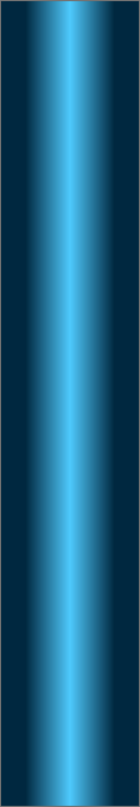
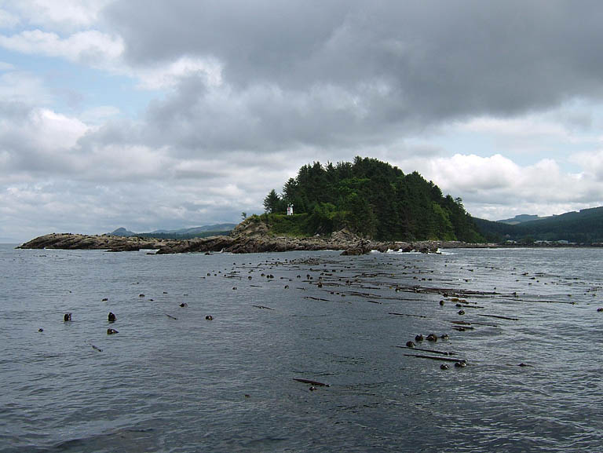
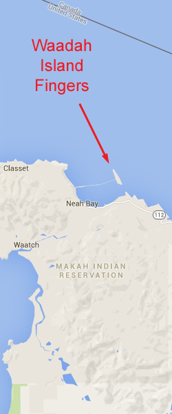

Double click to edit

Waadah Island Fingers
Topography: Series of parallel rock ridges that rise from a broken shell substrate to form canyons. Many of the canyon walls tower over 20 feet high.
Cape Flattery marine life rating: 5
Cape Flattery structure rating: 5
Diving Depth: 50-80 feet
Highlight: Canyon dive! Great opportunity for encounters with wolfeel and giant Pacific octopus in the open. Numerous and diverse invertebrate species.
Skill Rating: Advanced
GPS coordinates: N48° 23.320’ W124° 36.201’
Access by boat: This series of parallel ridges is a continuation of the fingers that characterize the northwest tip of Waadah Island. Waadah Island is situated just outside Neah Bay. The fingers are readily located with a depth sounder by running parallel to the northwest end of Waadah Island and watching the depth of the substrate continually jump up and down.
Shore Access: None
Dive profile: This current intensive site mandates a live boat. Emergency ascents outside the kelp bed could easily result in a diver being quickly swept into the Strait of Juan de Fuca.
I like to start my dives in about 70 to 80 feet of water and work my up a canyon to the southeast. My objective is to end my dive in the shallow bull kelp forest next to Waadah Island so I can do my safety stop out of reach of the current. Diving this plan requires extensive swimming, usually against current.
I start my dive where the ridge tops come within 50 or 60 feet of the surface. I descend as quickly as safety allows once in the water. Loitering on the surface means possibly drifting out of the ridge area, drifting into deeper water, or drifting to a more northern canyon that continues past the tip of Waadah Island.
The white plumose anemones attached to the ridge tops are often the first indication that the bottom will soon be in sight. I drop into a canyon that looks interesting and begin to explore. I spend most of my time around the base of the canyon walls as they provide the best shelter from current.
Some of the canyons merge to the southeast while others split. The canyons vary in width and depth, some being over 30 feet wide and 20 feet tall. The sheer canyon walls often diminish in height, only to pick up again further to the southeast. I sometimes ascend over a ridge and “canyon hop”. Many of the canyons have rock formations at the bases of the walls or amidst the white broken shell substrate between walls. These areas are often packed with marine life.
The substrate looses depth to the southeast very gradually between 70 and 50 feet. I can fin for 50 yards at times and not see any significant change in depth. A moderate to strong current often runs down the fingers, forcing me to take shelter from the current along the canyon walls.
I end up in about 30 feet of water among smaller rock walls and an extensive bull kelp forest if all goes according to plan. The kelp makes for a very easy safety stop and ascent to the surface. The current moderates by the time I make it to the shallows.
I sometimes realize the current is too strong to swim against after I descend. In these situations I spend most of the dive in 60-80 of water. When my air supply or no-deco time runs low, I scale the tallest ridge in the immediate area, prepare my finger spool and signal marker buoy, shoot the marker buoy, and perform a free ascent in the current.
I know divers who run the opposite dive plan. They start by the kelp beds and work to the northwest to deeper depths. The advantage of this profile is that they get a “current assist” as the current normally runs to the northwest through the fingers. The drawback is that the dive will get progressively deeper and end in a free ascent.
My preferred gas mix: EAN 36
Current observations:
Current station: Strait of Juan de Fuca (Entrance)
Noted slack corrections: None
I have not been able to establish a reliable link between predicted slack and actual slack at this site. I let surface observations dictate when to dive these fingers.
The norm is to encounter moderate to heavy current pushing to the northwest down the fingers on both flooding and ebbing tides. The breakwater, Waadah Island, and the tall ridges of the fingers all influence current in this area. I have encountered no significant current while diving the fingers on only a few occasions. On a single occasion, I actually encountered a current that pushed up the fingers.
I drift the boat over the dive site a few times prior to the dive to gauge the direction and intensity of the current. I only dive here when no tiderips or other topside visual signs of strong current are visible.
I make certain to discuss the two or three different dive scenarios I might encounter with the boat operator prior to the dive so he or she knows where to expect me to surface.
Boat Launch:
• Neah Bay Marina boat ramp. Approximately 2.5 miles from the dive site.
Facilities: None
Hazards:
Current: Current almost always runs northwest down the fingers. Fighting the current while trying to reach the shallows can ruin a dive.
Free ascent: If the current is too strong to make it to the shallows, a free ascent from 40-80 feet in heavy current is necessary.
Swell: Surge is often a factor in this area, even though the fingers are located five miles down the Strait of Juan de Fuca. A three foot swell is common.
Boat traffic: Boat traffic to and from Neah Bay often runs over this site. Heavy boat traffic must be expected during fishing season.
Fishing boats: This area is a very popular area for jigging for bottom fish, when it is open.
Snagging hazard: Discarded fishing tackle and line are strewn throughout this site.
Fog: Fog is common throughout the Cape Flattery area, even in summer. Thick fog makes difficult, if not impossible, to find a surfaced diver if they perform a free ascent.
Marine Life: The invertebrate marine life at this site is among the best in the area. The fingers are extremely rich in interesting invertebrates including iophon sponges, grey puffball sponges, orange finger sponges, and opalescent nudibranchs just to name a few. I have seen more wolfeel swimming in the open at this site than at all other sites combined. Giant pacific octopus also hunt this area extensively, an event I have been very fortunate to witness on several occasions.
Schools of black rockfish occupy the kelp beds in the shallows. Tiger, vermilion, China, copper, canary, blue, and yellowtail rockfish prefer the deeper waters of the canyons. This is one of the few sites where I have seen an adult yelloweye rockfish. Diving Waadah Island fingers is always an adventure - and sometimes a workout.
Cape Flattery marine life rating: 5
Cape Flattery structure rating: 5
Diving Depth: 50-80 feet
Highlight: Canyon dive! Great opportunity for encounters with wolfeel and giant Pacific octopus in the open. Numerous and diverse invertebrate species.
Skill Rating: Advanced
GPS coordinates: N48° 23.320’ W124° 36.201’
Access by boat: This series of parallel ridges is a continuation of the fingers that characterize the northwest tip of Waadah Island. Waadah Island is situated just outside Neah Bay. The fingers are readily located with a depth sounder by running parallel to the northwest end of Waadah Island and watching the depth of the substrate continually jump up and down.
Shore Access: None
Dive profile: This current intensive site mandates a live boat. Emergency ascents outside the kelp bed could easily result in a diver being quickly swept into the Strait of Juan de Fuca.
I like to start my dives in about 70 to 80 feet of water and work my up a canyon to the southeast. My objective is to end my dive in the shallow bull kelp forest next to Waadah Island so I can do my safety stop out of reach of the current. Diving this plan requires extensive swimming, usually against current.
I start my dive where the ridge tops come within 50 or 60 feet of the surface. I descend as quickly as safety allows once in the water. Loitering on the surface means possibly drifting out of the ridge area, drifting into deeper water, or drifting to a more northern canyon that continues past the tip of Waadah Island.
The white plumose anemones attached to the ridge tops are often the first indication that the bottom will soon be in sight. I drop into a canyon that looks interesting and begin to explore. I spend most of my time around the base of the canyon walls as they provide the best shelter from current.
Some of the canyons merge to the southeast while others split. The canyons vary in width and depth, some being over 30 feet wide and 20 feet tall. The sheer canyon walls often diminish in height, only to pick up again further to the southeast. I sometimes ascend over a ridge and “canyon hop”. Many of the canyons have rock formations at the bases of the walls or amidst the white broken shell substrate between walls. These areas are often packed with marine life.
The substrate looses depth to the southeast very gradually between 70 and 50 feet. I can fin for 50 yards at times and not see any significant change in depth. A moderate to strong current often runs down the fingers, forcing me to take shelter from the current along the canyon walls.
I end up in about 30 feet of water among smaller rock walls and an extensive bull kelp forest if all goes according to plan. The kelp makes for a very easy safety stop and ascent to the surface. The current moderates by the time I make it to the shallows.
I sometimes realize the current is too strong to swim against after I descend. In these situations I spend most of the dive in 60-80 of water. When my air supply or no-deco time runs low, I scale the tallest ridge in the immediate area, prepare my finger spool and signal marker buoy, shoot the marker buoy, and perform a free ascent in the current.
I know divers who run the opposite dive plan. They start by the kelp beds and work to the northwest to deeper depths. The advantage of this profile is that they get a “current assist” as the current normally runs to the northwest through the fingers. The drawback is that the dive will get progressively deeper and end in a free ascent.
My preferred gas mix: EAN 36
Current observations:
Current station: Strait of Juan de Fuca (Entrance)
Noted slack corrections: None
I have not been able to establish a reliable link between predicted slack and actual slack at this site. I let surface observations dictate when to dive these fingers.
The norm is to encounter moderate to heavy current pushing to the northwest down the fingers on both flooding and ebbing tides. The breakwater, Waadah Island, and the tall ridges of the fingers all influence current in this area. I have encountered no significant current while diving the fingers on only a few occasions. On a single occasion, I actually encountered a current that pushed up the fingers.
I drift the boat over the dive site a few times prior to the dive to gauge the direction and intensity of the current. I only dive here when no tiderips or other topside visual signs of strong current are visible.
I make certain to discuss the two or three different dive scenarios I might encounter with the boat operator prior to the dive so he or she knows where to expect me to surface.
Boat Launch:
• Neah Bay Marina boat ramp. Approximately 2.5 miles from the dive site.
Facilities: None
Hazards:
Current: Current almost always runs northwest down the fingers. Fighting the current while trying to reach the shallows can ruin a dive.
Free ascent: If the current is too strong to make it to the shallows, a free ascent from 40-80 feet in heavy current is necessary.
Swell: Surge is often a factor in this area, even though the fingers are located five miles down the Strait of Juan de Fuca. A three foot swell is common.
Boat traffic: Boat traffic to and from Neah Bay often runs over this site. Heavy boat traffic must be expected during fishing season.
Fishing boats: This area is a very popular area for jigging for bottom fish, when it is open.
Snagging hazard: Discarded fishing tackle and line are strewn throughout this site.
Fog: Fog is common throughout the Cape Flattery area, even in summer. Thick fog makes difficult, if not impossible, to find a surfaced diver if they perform a free ascent.
Marine Life: The invertebrate marine life at this site is among the best in the area. The fingers are extremely rich in interesting invertebrates including iophon sponges, grey puffball sponges, orange finger sponges, and opalescent nudibranchs just to name a few. I have seen more wolfeel swimming in the open at this site than at all other sites combined. Giant pacific octopus also hunt this area extensively, an event I have been very fortunate to witness on several occasions.
Schools of black rockfish occupy the kelp beds in the shallows. Tiger, vermilion, China, copper, canary, blue, and yellowtail rockfish prefer the deeper waters of the canyons. This is one of the few sites where I have seen an adult yelloweye rockfish. Diving Waadah Island fingers is always an adventure - and sometimes a workout.



Puget Sound King Crab
Giant Pacific Octopus
Canary Rockfish
Tiger Rockfish
Grey Puff-Ball Sponge
Underwater imagery from this site

Opalescent Nudibranch

Black Rockfish

China Rockfish